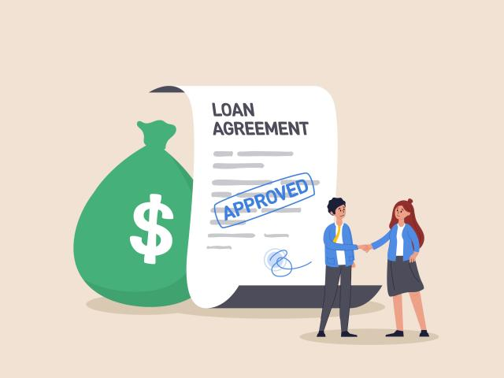

- Student Loans -
We've all heard about loans, our dearest friends.
So remember the Subsidized and Unsubsidized loans I mentioned in the Financial Aid section? Well here they are now!
Say you don't qualify for scholarships or federal grants, Federal Sub and Unsub loans are there to save the day!
Federal Sub loans simply pay the interest for you while your in school AND intrest doesn't accrue until roughly 6 MONTHS AFTER you graduate (So if you get a $500 loan, you just need to pay $500 back unless interest accrues).
Federal Unsub loans however don't pay the interest for you and it starts accruing when you get the loan (but the rates are very low and so are the loan amounts usually).
Be aware of taking private loans out if you need to, the rates for these loans tend to be much higher than federal ones along with the loan amounts, so you end up paying a lot!
- Other Loans or "Debt" -
Now let's talk about our other dearest friend, debt.
In terms of other loans, students typically have car loans if they want to finance a new car, or have credit card payments (I think of them as loans) as well.
Now where debt comes in, is if you don't pay your credit card bills on time, and this is really bad debt to have!
With credit cards, you are given a credit limit (you can think of them as a loan).
Say your credit limit is $300, and you spend that $300, you have to pay it back the month after, when your statement is due.
Now why credit card debt is really bad to have is for because it reports to your credit score (affects your ability to get low interest loans for a house or car), and the rates are extremely high.
But what makes credit cards really good is it can be used as a form of "borrowing" or "delaying" payment for purchases, granted you have the capital for them. You also get lots of rewards with certain credit cards (Cash Back is usually a popular one).
Example: Say you have a credit limit of $2000, and you want to buy a $300 gaming console, as long as you have enough money in your checking account (where you make credit card payments from), then it wouldn't be wrong to buy that console.
Reasoning: Say you get 3% Cash Back rewards on that card and other benefits AND don't use that card for the rest of the month, you keep low utilization, make your payments on time, AND didn't need to pay out of pocket for that gaming console right away.
It's good to adopt these behaviors because factors such as low utilization (only using around $300 on a $2000 monthly limit), on-time payments, and other responsible behaviors BUILD your credit, which is important as stated earlier.
However, always be careful and be aware of your financial behaviors and purchases, and always ask someone you trust before ever making any purchases or taking any loans you aren't sure about!
